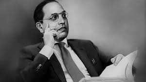

Dr. Bhimrao Ramji Ambedkar, popularly known as Babasaheb, was an Indian jurist, economist, politician, and social reformer who inspired the Dalit Buddhist movement and campaigned against social discrimination towards the untouchables (Dalits), while also supporting the rights of women and workers.
Born into a poor Mahar (Dalit) family, Ambedkar faced social discrimination from an early age. However, his determination to fight against injustice led him to become one of the most influential figures in Indian history. He played a pivotal role in drafting the Indian Constitution and is often referred to as the "Father of the Indian Constitution."
Ambedkar's contributions to Indian society are immeasurable. He worked tirelessly to eradicate caste-based discrimination and promote equality and justice for all. His efforts led to the inclusion of fundamental rights and social justice provisions in the Indian Constitution, ensuring the protection and welfare of marginalized communities.
Throughout his life, Dr. B.R. Ambedkar emphasized the importance of education as a means of empowerment. He believed that education was the key to social and economic progress and worked to establish educational institutions for the upliftment of Dalits and other marginalized groups.
In addition to his work as a social reformer, Dr. B.R. Ambedkar made significant contributions to the field of economics and law. He earned multiple degrees, including a doctorate in economics from the University of London, and used his expertise to advocate for economic and social reforms that would benefit the marginalized sections of society.
Dr. B.R. Ambedkar's legacy lives on through various institutions, statues, and memorials dedicated to him across India. His ideas and principles continue to shape modern India's social and political landscape, and his birthday, April 14th, is celebrated as Ambedkar Jayanti in India.
His life and work serve as a reminder of the importance of perseverance, courage, and compassion in the face of adversity. Dr. B.R. Ambedkar will always be remembered as a champion of social justice and a beacon of hope for millions of marginalized people around the world.
For more information about Dr. B.R. Ambedkar, you can visit Wikipedia.